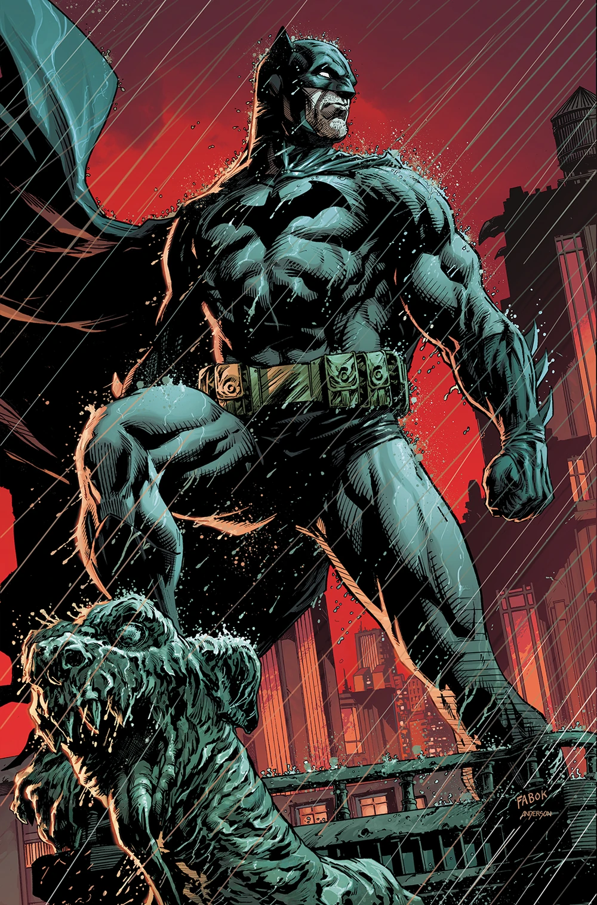
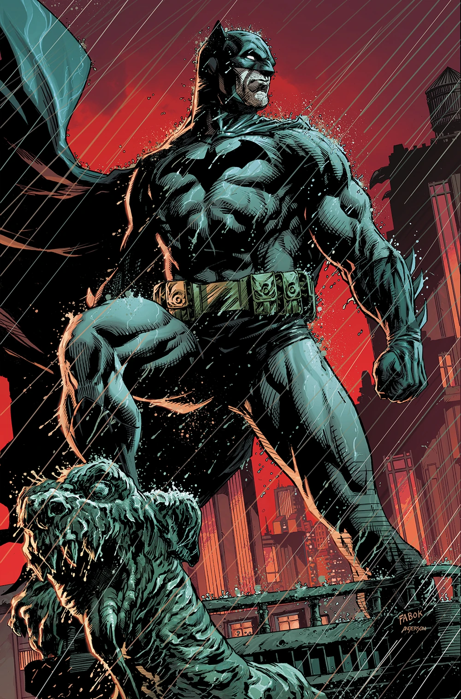
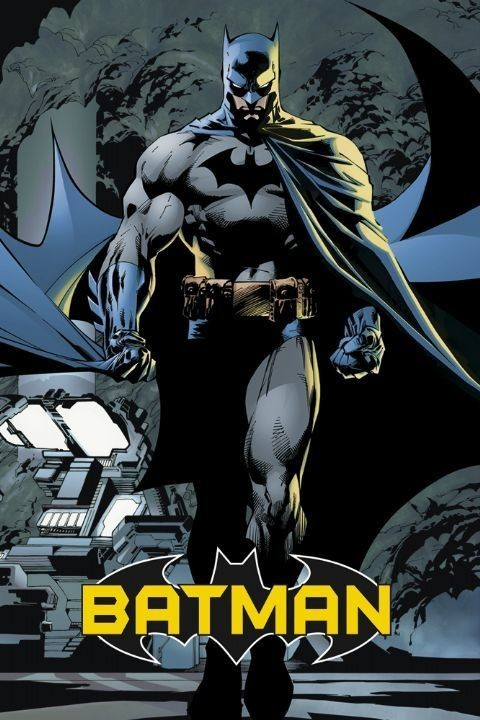
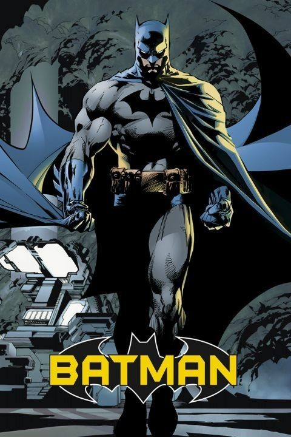

Batman is a superhero who appears in American comic books published by DC Comics. Batman was
created by
the artist Bob Kane and writer Bill Finger,
and debuted in the 27th issue of the comic book Detective
Comics on March 30, 1939.
Creators: Bob Kane, Bill Finger
Children: Damian Wayne, Huntress, Robin
Romantically involved with: Catwoman, Wonder Woman, Vicki Vale
Powers and abilities: Flight, Martial Art
Notable aliases: Bat-Man, Batman, Batman / Bruce Wayne, Batman 2, Batman/Bruce Wayne, Bats,
Bruce Wayne
Parents: Thomas Wayne, Martha Wayne
Foes: Joker, Penguin, Harley Quinn, Riddler
Wikipedia
 

 



The Joker is a supervillain appearing in American comic books published by DC Comics.
Created by Bill Finger, Bob Kane, and Jerry Robinson, the character first appeared in the
debut issue of the comic book Batman on April 25, 1940. Credit for the Joker's creation is
disputed; Kane and Robinson claimed responsibility for his design while acknowledging Finger's
writing contribution. Although the Joker was planned to be killed off during his initial appearance,
he was spared by editorial intervention, allowing the character to endure as the archenemy of the
superhero Batman.
Publisher - DC Comics
First appearance Batman (cover-dated spring 1940; published April 25, 1940)
Created by - Bill Finger ,Bob Kane,Jerry Robinson
Team affiliations - Injustice League,Legion of Doom,Injustice Gang
Notable aliases : Red Hood[2]
Abilities - Criminal mastermind,Expert chemist,Utilizes weaponized props and toxins.